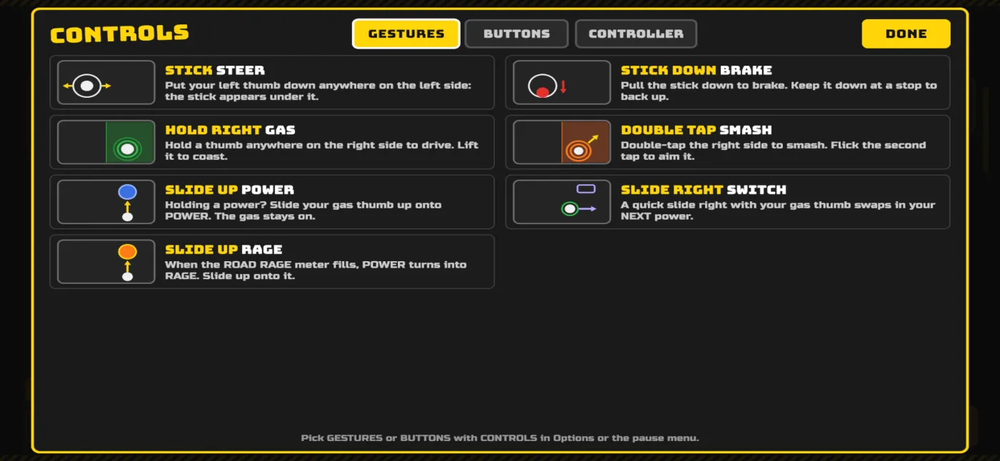
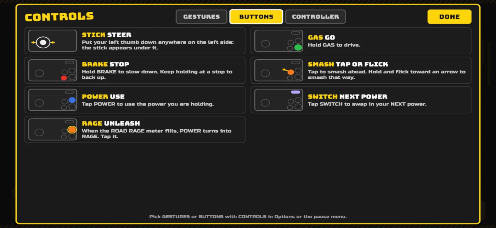
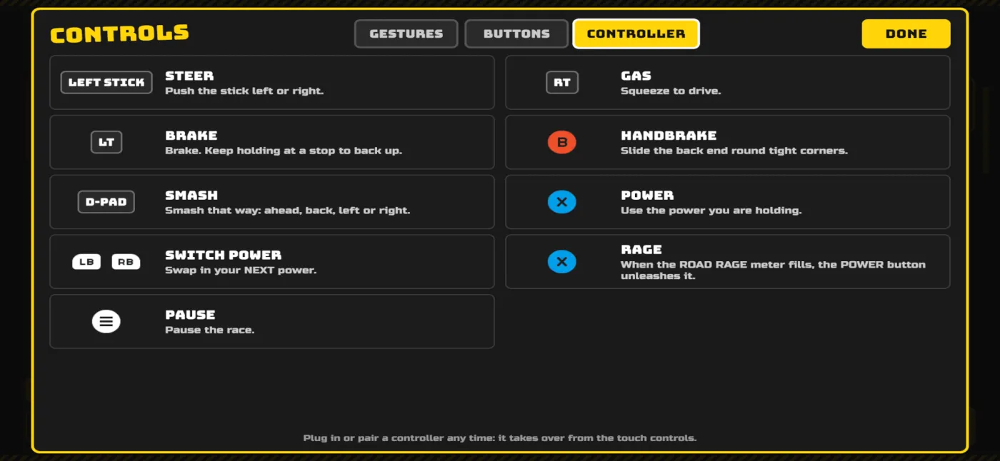

Support
Something broken, confusing or just fun to talk about? Email support@roadrage99.com. Tell us your device, iOS version and the game version (it is shown in the menu), and what happened. We read everything.
FAQ
How do I reverse?
Gestures: pull the stick down to brake, and keep it down at a stop to back up. Buttons: hold BRAKE, and keep holding it at a stop to back up. If you are stuck on the gas, BRAKE pulses and reads REVERSE to remind you.
Gamepad: hold the left trigger (LT on Xbox, L2 on PlayStation). Keyboard: hold S.
What are the controls?
There are two touch schemes, GESTURES and BUTTONS. Switch with CONTROLS in Options or the pause menu, and tap HELP in Options any time to see these screens in the game.
Gestures
- Steer: put your left thumb down anywhere on the left side and the stick appears under it. Pull it down to brake.
- Gas: hold a thumb anywhere on the right side. Lift it to coast.
- Smash: double-tap the right side. Flick the second tap to aim it.
- Power: holding a power? Slide your gas thumb up onto POWER. The gas stays on.
- Switch power: a quick slide right with your gas thumb swaps in your NEXT power.
- Rage: when the ROAD RAGE meter fills, POWER turns into RAGE. Slide up onto it.

Buttons
- Steer: the stick appears under your left thumb.
- GAS (bottom right): hold to drive. BRAKE (left of GAS): hold to slow down, and keep holding at a stop to back up.
- SMASH (above BRAKE): tap to smash ahead, or hold and flick toward an arrow to smash that way.
- POWER (above GAS): tap to use the power you are holding. When the ROAD RAGE meter fills it turns into RAGE: tap it.
- SWITCH (top right): tap to swap in your NEXT power.

Controller
- Left stick: steer. Right trigger (RT / R2): gas. Left trigger (LT / L2): brake, and back up at a stop.
- B / Circle: handbrake. D-pad: smash ahead, back, left or right.
- X / Square: use your power, or unleash RAGE. Bumpers (LB / RB): switch power.
- Menu button: pause. Plug in or pair a controller any time and it takes over from the touch controls.

Does it work with a controller?
Yes. Connect a Bluetooth gamepad (Xbox or PlayStation controllers pair in iOS Settings, then Bluetooth) and the on-screen buttons give way to controller prompts. The game keeps your screen awake while you play, so it will not lock mid-race.
How do I restore my purchases?
Cars and Remove Ads come back with Restore Purchases. Gas Money packs and Super Juggernaut starts are consumables: once spent, or if you delete the game, they do not restore. To get your cars and Remove Ads back on a new phone or after a reinstall: open the menu, tap the options button (top right), then Restore Purchases. Sign in to the same Apple ID you bought it with. The button disappears once Remove Ads is active. If it says nothing was found, check that you are signed in with the right Apple ID, then email us.
What can I buy?
Gas Money packs, cars, Super Juggernaut starts and Remove Ads. Everything you can buy with real money you can also earn with Gas Money from finishing levels, except Super Juggernaut starts and Remove Ads. Prices vary by country; the App Store page shows what is on offer where you are.
What does Remove Ads remove?
The ads shown between runs. Optional rewarded ads (watch one to start a run with a power) are always your choice. See the privacy policy for how ads work.
The game asked about tracking and about sharing stats. What are those?
The first is Apple's standard tracking question for ads: saying no still lets ads run, just less personalized. The second is our one-time "help improve Road Rage?" question for anonymous play stats. You can switch it off any time in the options (Share Stats). Details are in the privacy policy.
Where is my progress saved?
On your device only. Deleting the app deletes your stars and best times; there is no account or cloud save yet.
I can't hear anything.
Check the ring/silent switch and your volume. If it still happens, email us with your device and iOS version.
TestFlight and beta testing
Road Rage is in testing before launch. TestFlight builds are real, early builds: expect rough edges. In TestFlight builds there are no between-run ads, so testers can just play. To report a bug, use TestFlight's Send Beta Feedback (screenshot and a note) or email support@roadrage99.com.
If your install code or invitation does not work, email us the address on your Apple ID and we will check the tester list.
Legal
Read the privacy policy.